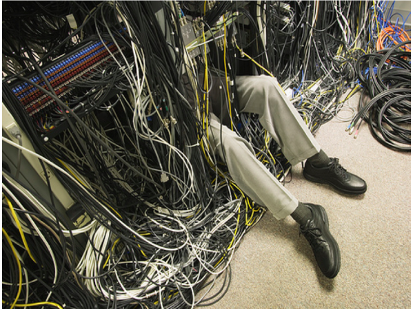
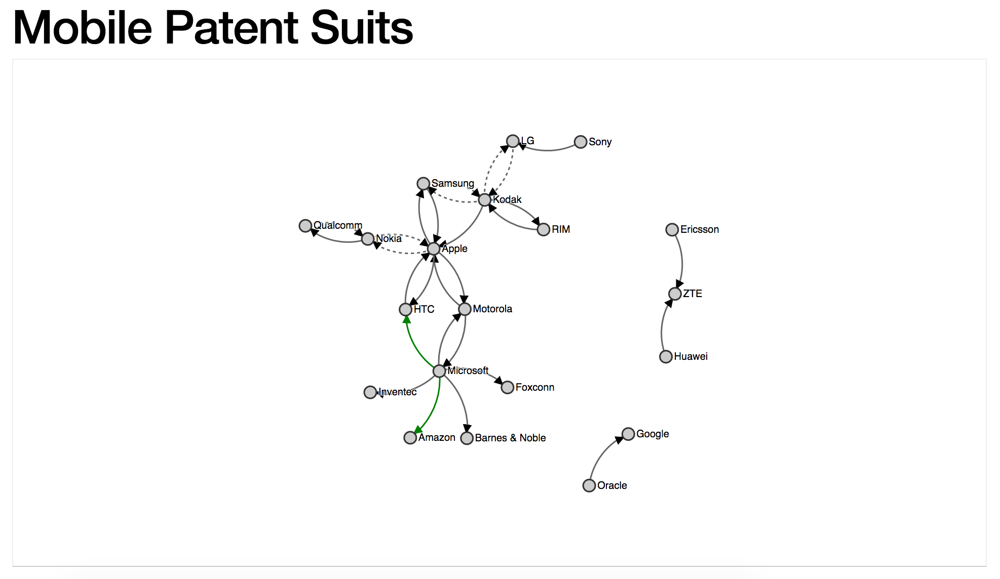

Project Description
What is it?
Drawing a dynamic network topology diagram with LLDP data using D3.
Why?
This project would allow an engineer to make a visual representation of how devices are connected together, saving time on drawing out that diagram manually.
This would have helped me as a network engineer. Imagine getting a service request for a customer complaining users can't access the internet in some parts of the building. You walk into the customer's datacenter or IT closet and see something like this:
Trying to trace cables to see how each router or switch is connected would take too long.
Instead we can log into one of the devices and use Link Layer Discovery Protocol (LLDP) to gather data from the network about how things are connected.
This is helpful, but it will still take a significant amount of time to draw out a network diagram based on this output data.
This project aims to save network engineers time by taking LLDP data from network devices, convert them to JSON data to feed to D3.JS so it can diagram the JSON data into a quick and easy to read network map.
How?
After some research on graphing libraries, I found D3 Force diagrams to be suitable. The image is an example of how D3 Force can take JSON input and output a 'network' of nodes and their connections to eachother.
